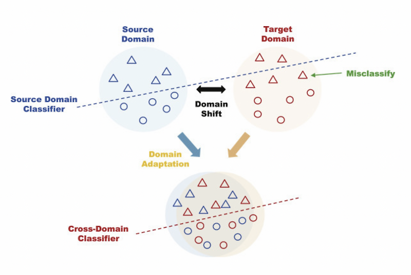

핵심 개념
Source Domain과 Target Domain의 데이터 분포가 다르면, 학습 단계에서 좋은 성능을 보이던 모델도 실제 환경에서는 성능이 떨어질 수 있습니다.
Source Domain
라벨이 충분한 학습 데이터. 예: 시뮬레이션 이미지, 정제된 사내 데이터
라벨이 충분한 학습 데이터. 예: 시뮬레이션 이미지, 정제된 사내 데이터
Target Domain
실제 서비스에 들어오는 데이터. 예: 현장 촬영 이미지, 실제 사용자 로그
실제 서비스에 들어오는 데이터. 예: 현장 촬영 이미지, 실제 사용자 로그
Domain Gap
두 도메인 사이의 통계적 차이. 배경, 조명, 노이즈, 해상도, 센서 특성 등이 원인이 됩니다.
두 도메인 사이의 통계적 차이. 배경, 조명, 노이즈, 해상도, 센서 특성 등이 원인이 됩니다.
목표: domain gap 최소화